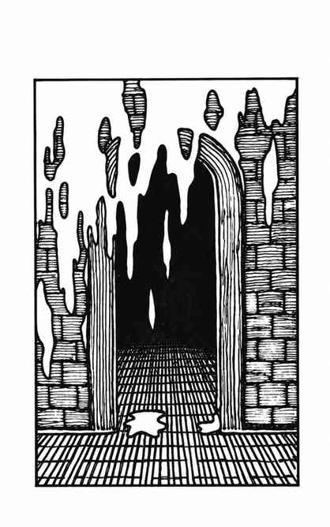

绿胶 · Green Slime
 |
|
绿胶是一种生长在地下的奇异植物。它不能移动，只会缓慢生长，以动物、植物与金属物质为食。绿胶能感知震动，常从上方落到经过的生物身上。
绿胶会附着于活体肉身，并在 1–4 个近战轮后将受害者转化为绿胶；此后无法复活。它缓慢侵蚀木材，每小时可蚀去 1 寸厚度；它腐蚀金属很快，3 个近战轮即可穿透板甲。
若迅速刮除（刮除后须丢弃工具）、切除、冷冻或烧灼，便能清除绿胶。“医疗疾病”法术可杀死绿胶。其他攻击方式——包括武器与法术——都无法伤害它。
偶尔有关于巨大绿胶或数十个个体组成的群落的报告。